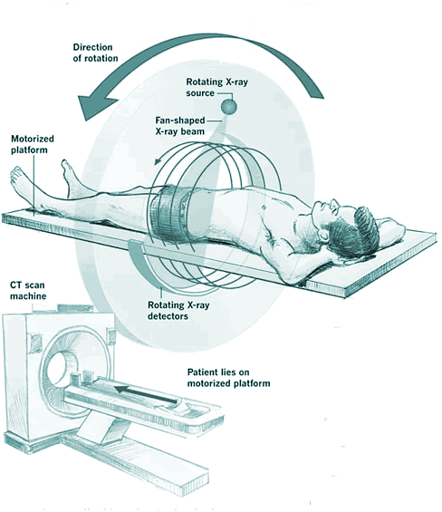

R is a language and environment
for statistical computing
and graphics.
https://cran.r-project.org/
R is much more than that now, but…
What did R have for medical imaging?

https://imgflip.com/memegenerator/Grandma-Finds-The-Internet
What did R have for medical imaging?

What did R have for medical imaging?

Envy: Bioconductor

- centralized bioinformatics packages (> 1300)
- large community/developer team
- published tutorials and workflows
- additional requirements to CRAN (e.g. packages need vignettes)

An R Platform for
Medical Imaging Analysis
What is Neuroconductor?
- A centralized repository of packages (N = 115)
- A community of developers (N = 29) and users
- A website https://neuroconductor.org/.
- with tutorials and help
- A team helping developers and users (John, Adi Gherman, Ciprian Crainiceanu, Brian Caffo)
- Set of packages to allow R to perform processing.
Workflow for an Analysis
- bash

- FSL

- ANTs

- MRIcroGL

- OsiriX

- SPM 12

Workflow for an Analysis
Multiple pieces of software used
- all different syntax
Our Goal:
Lower the bar to entry
- all “one” code (
R)- pipeline tool
- also “native”
Rcode
Complete pipeline
- preprocessing and analysis

Benefits of Neuroconductor
Allow imaging to use all R has to offer:
- Statistics and Machine Learning (
tensorflow) - Versioning and testing (
GitHub) - Reproducible reports and analyses
- Shiny (web applications)
- Genomics/Imaging analysis in one platform
- Bioconductor
Goal: Centralize the packages (currently 115)

New release (December 2019)
Development Pipeline:
Check the package for stability
- check against other imaging software (e.g. FSL)

Package Features: Image Registration
- ANTsR, RNiftyReg, fslr

Package Features: Inhomogeneity Correction
- ANTsR, fslr
Package Features: Intensity Normalization
- WhiteStripe - https://github.com/muschellij2/whitestripe
- RAVEL - https://github.com/Jfortin1/RAVEL
- ComBat (adapted from genomics) - https://github.com/Jfortin1/ComBatHarmonization

Package Features: Smoothing
- fslr, ANTsR, AnalyzeFMRI

Package Features: Data
neurohcp - Human Connectome Project
kirby21.t1, kirby21.fmri - https://www.nitrc.org/projects/multimodal
nitrcbot - https://www.nitrc.org/
Rxnat - XNAT databases

Neuroconductor Goal:
Detailed tutorials on how to actually perform an analysis

Some (Unpopular?) Opinions for Statisticians
- No code = no method…yet.
- “Available upon request” - not usually upheld
- We are not the leaders in imaging
- Not everyone cares about our methods
- Many engineers are better in imaging at a) distributing code and b) selling their method
- Most grants (& depts) don’t really support software well.
Helping Developers
- GitHub allows the Neuroconductor team to help fix issues
- Pull Requests to developers
- Standardized checking of Packages (Travis configuration)
- Remove unnecessary hurdles for developers

{kind=link}
Training we are providing
Neuroimaging Analysis in Stroke
The MISTIE Stroke Trial
- Minimally Invasive Surgery plus r-tPA for Intracerebral Hemorrhage Evacuation (MISTIE)
- Multi-center, multi-national Phase II RCT
- Patients with intracerebral hemorrhages (≥ 20 millilters)

What is Intracranial/Intracerebral hemorrhage?
- When a blood vessel ruptures into:
- Tissue ⇒ intracerebral hemorrhage (ICH)
- Ventricles ⇒ intraventricular hemorrhage (IVH)
- ≈ 13% of strokes

http://www.heartandstroke.com/site/c.ikIQLcMWJtE/b.3484153/k.7675/Stroke__Hemorrhagic_stroke.htm
X-ray Computed Tomography (CT) Scans


A note the MRI folks (about CT)
- CT is the modality for clincial ICU imaging
- CT has standard units (Hounsfield Units)
- Takes seconds vs. minutes (MRI)
- Muschelli, J., 2019. Recommendations for Processing Head CT Data. Frontiers in neuroinformatics, 13, p.61.
- https://johnmuschelli.com/process_head_ct/example/
ichseg: ICH Segmentation on CT
ichseg::ich_segment(img = "/path/to/ct/scan")
Things in the Works/Other work
https://github.com/ANTsXNet - Wide array of deep learning applications for R
https://github.com/msharrock/deepbleed - CNN for ICH Segmentation
Publish the Weights!
Questions?
Email: 
Submit Packages at: https://neuroconductor.org/submit-package
Funding: NIH 2R01NS060910 and U24HG010263